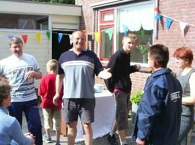
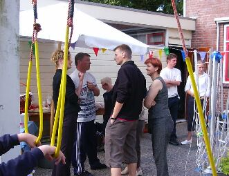
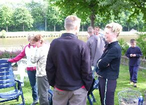
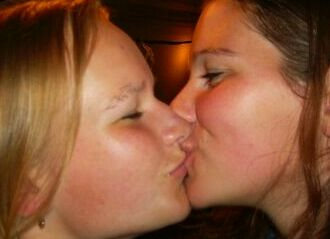
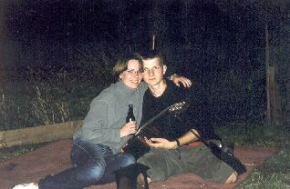

Нидерланды (Июнь 2003) - Нидерланды: день 11 - вечеринка
Июнь 21, 2003 /9804 PB NOORDHORN, NETHERLANDS/
Немного вспомнил, что такое физический труд – дрова носили для нашего будущего костра, шашлыки будем кабанить :).
Потом в нет. Потом пошёл музыку слушать. Хорошие песенки у группы MUSE. Особенно 'New born' и 'Bliss'. Написал на русском и свою песенку (ой, давно я этого не делал). Скорее всего под впечатлением от увиденной девушки с дрэдами (см. my road journal 10).
С 14:хх начали немного готовиться к вечеринке: расставлять стулья, носить дрова, еду и т.д.
Интересная особенность у иностранцев во время проведения разных вечеринок. Так называемый селф-сервис (самообслуживание). Главное не медлить, а то всё разберут. Ящик пива, стоящий одиноко в углу, сразу бросается в глаза :).
Я немного уделил внимание девушкам. Особенно той, которая учится в университете. Ей 22 года и она занимается обменом студентами в странах Европы. Вчера мне мои родители говорили, чтобы я с ней поговорил по этому поводу. Я согласился, но тогда я и не подозревал, что произойдёт нечто неожиданное! Читаете дальше, всё расскажу. Когда я взял себе очередную бутылку пива и возвращался к фритюрнице, заметил её. Решил заговорить, ибо девушка симпатичная. Я только предполагал, что это она занимается обменом студентов, но на все 100 не был уверен. Она спросила хочу ли я учиться за границей. Я ответил, что одна девушка должна принести документы, в которых указано с какими странами будет проходить обмен студентов в этом году. Она казала, что эта девушка она и есть :). Вот так я с ней и познакомился. Потом я, она и дочь хозяина сели за один столик. Я им ещё немного вина принёс (не по моему желанию:)). Сидели, болтали про всё, что угодно, кроме учебы. Так незаметно подкрался вечер (21:10). Я ещё успел сыграть в типа-футбол с парнем Анжелы. Народ немного раскрепощенный стал. Сели в кружочек. Дядя достал баян (ещё такое есть??? 8)). Другой дядя взял гитару и начали играть. Нет, не красивые мелодии, а простые русские народные песни. Надо сказать, что неплохо у них это получалось. Даже не смотря на то, что были немного подвыпившие, но музыка лилась.
Забыл сказать, что меня неоднократно приглашала Анжела на ещё одну вечеринку после этой. Но, в отличие от этой, другая будет длиться целую ночь =). Я сначала сказал, что мне нужно подумать, но потом отказался. Не знаю почему, просто мне почему-то не захотелось. Ещё мне рассказали, что от Ролинды парень ушёл. Я то думаю, почему она так быстро вернулась из похода. Оказывается этот мудак нашёл себе другую! Чудо, а не парень! Немного отвлеклись. Так вот, музыка лилась. Хотя я её не замечал. Вернее я её вообще не слышал, так как ушёл в дом. Я уже думал, что скоро пойду спать (сейчас 24:10). Сел на полу и смотрел, как Ролинда ищёт в Интернете слова песен, которые у неё попросили наши "музыканты" :). Помнится мне рассказывал я про девушку из университета. Вот только забыл я её имя написать – Marianne. Вот сижу я, никого не трогаю, смотрю как Ролинда в нете копается. Подходит Марьяна, прижалась ко мне, положила руки на плечи. "Может просто устала" – подумал я… В общем через пять минут я полез в нет (Ролинда уже распечатала слова). Марьяна принесла пиво. Спрашивает, "хочешь?" .
- Да.
- Тогда пошли на улицу, - говорит она и медленно отбирает клавиатуру.
- Ещё пять минут. (Я в чате на pinsk.tut.by сидел).
Девушка не отставала. Уже начала забирать стул, я сел на колени, но все равно продолжал общаться в чате (просто нужно было у кого-то что-то спросить). Я уже было собирался идти, но Марьяна со словами "я жду тебя на улице" медленно потопала на выход. Ещё и добавила – "помешенный". Через 15 минут я вышел на улицу. Марьяна с кем-то разговаривала (по-моему, того, с кем она болтала на голландском я не видел сегодня; может пива попить пришла:)). Забрал я пиво, хотя пришлось немного постараться (девушка хрупкая, но бутылку держит крепко). Взял пиво и пошёл смотреть, как играют на гитарах, коих уже две. Через 3 минуты проходит мимо Марьяна. "Нда, - думаю, - мимо". Но нет, повернулась ко мне, кивнула головой, мол "пошли". Приземлились мы на коврике. Народ нас и не видел, так как весь свет от фонаря падал на них, а мы как раз были в тени. Начали откровенно так беседовать. Про её бывшего парня, про, как её там, любовь :), про веру (не имя:)). Потом я немного осмотрелся, ба, гитара! Хороша, струны железные, приятно так =). Попробовал сыграть 'The Mind's Eye' by DARK TRANQUILLITY (наверное, заболел я этой мелодией, а может просто потому, что это самая красивая мелодия из тех, что я слышал на акустической гитаре). Играть было немного темновато, но зато какой звук =). Явно немало стоит эта гитара. Пока сидели с Марьяной, выпили по 4 бутылки. Ну она 3 с половиной – одну нечаянно перевернула :). И вообще, за весь этот вечер (уже ночь!) я выпил больше пива чем когда либо! Где-то около 12 бутылок, то есть получается ящик. И сказать, что был пьян? Неа! Немного на сон тянуло и устал - целый день на ногах! Не знаю я такое состояние как "пьяный" ибо никогда в оном не был. А вот девушку после (если не ошибаюсь) шестой уже снесло. Начали мы разговаривать про-что-только-могли. Правда кто-то сказал (или я в журнале прочёл) что девушки более раскрепощённые, чем парни. И права, черед пару минут она уже гладила мою руку. Гости уже расходились (24:40). А гитару тётя забыла :-р. Видать, не до гитары ей было. Как бы домой дойти без происшествий :-D.
Francisk'e отдельный respect! Она поняла ситуацию и принесла нам свечки на улицу! Ой, я так ещё не сидел. Потом Франциска принесла фотоаппарат и сделала два кадра :). Уважаю таких людей как она. А ей только 15 лет. И вообще про её отдельный разговор, как и про каждого члена их семьи. Так держать!
В общем, лежим мы с Марьяной, болтаем. Приходит хозяин (Херрит) и понеслось. Началась такая беседа… Марьяна спрашивала его "когда ты говорил твоей жене "я тебя люблю"?", "cчитаешь ли её лучшей?" и т.п. Но дядя держался крепко, молодец :). Уже около 3:30 ночи и мы решили разойтись по домам. Марьяна приехала на велосипеде и обратно ехать на нём не хотела (ну-ну :)). Хозяин принёс мне фонарь-прожектор, отдал мне ключи от дома, чтобы я по возвращении закрыл всё. Расстояние до дома Марьяны можно преодолеть за 10 минут обычным шагом. Мы же зашли за 47 минут :). Шли не спеша, обнявшись как друзья :). Правда такие вопросы с намёками были: "когда я последний раз целовался с девушкой?"; "Есть ли у меня сейчас кто?". Подошли к её дому, просто стояли минут 15. Она всё не хотела идти домой, но с четвёртого раза я её уговорил. Вообще-то, я мог бы и поцеловать её, но моей стороны было бы не честно, поэтому я пошёл домой.
На улице прохладно, скоро рассвет. Через 7 минут был в постели. Интересно посмотреть на её поведение завтра… то есть сегодня. Тем более она спрашивала, буду ли я так близок к ней как сегодня. И со словами "у нас больше чем дружбы ничего не может быть" я заснул.
Till next time.
finn ©

Всё только начинается :)

А это я с Анжелой болтаю

Опять с ней

Тот самый селф-сирвис

Я (слева) с хозяином (справа)

Во! А это дело было на той вечеринке, на которую я не захотел пойти.

Marianne и Я